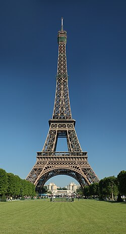
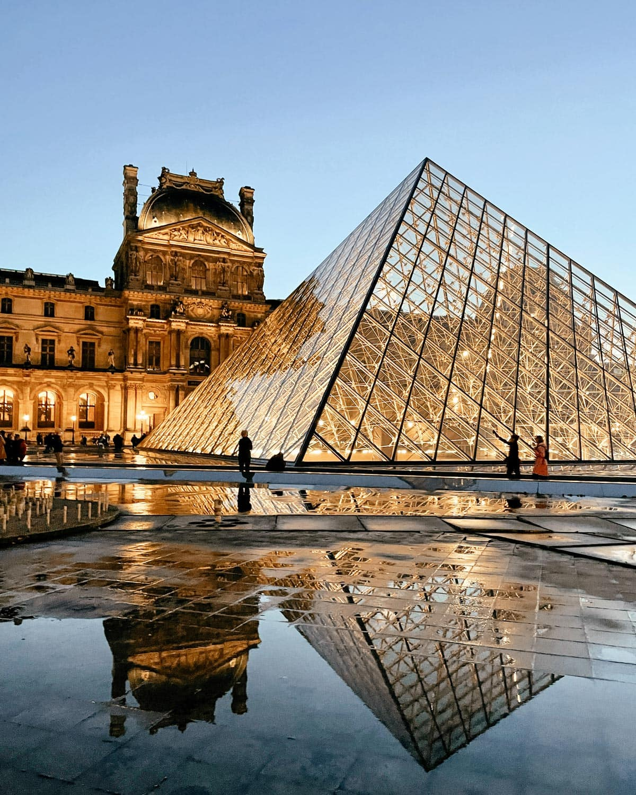
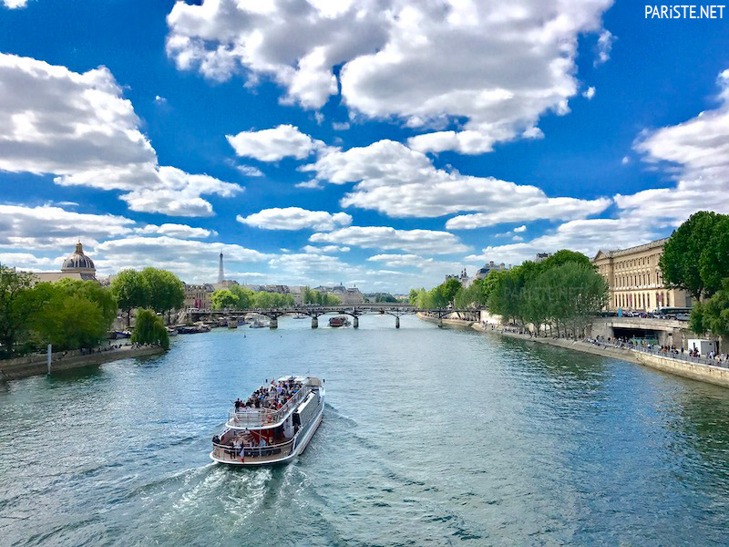
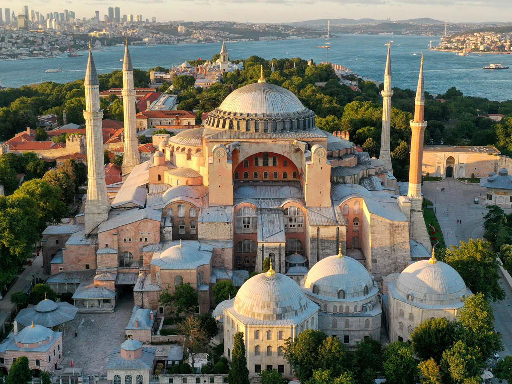
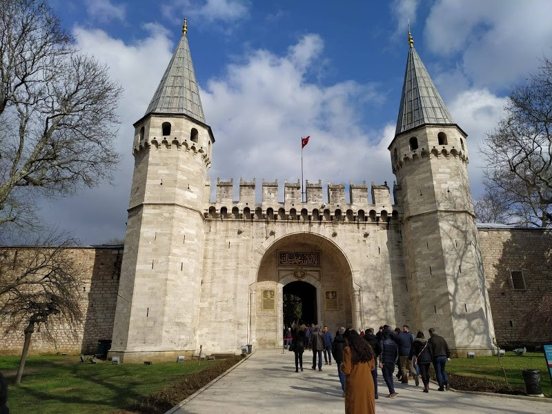
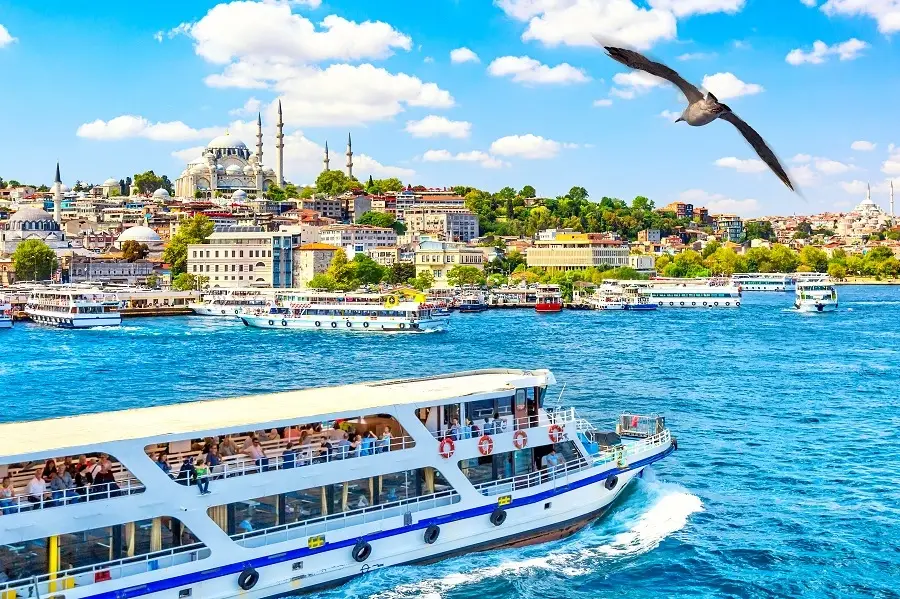
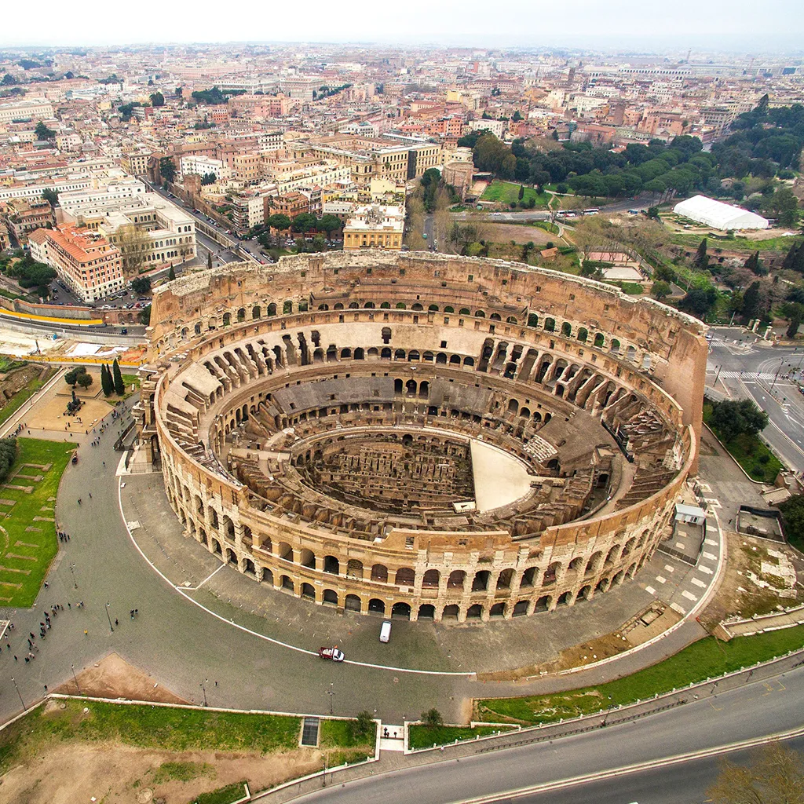
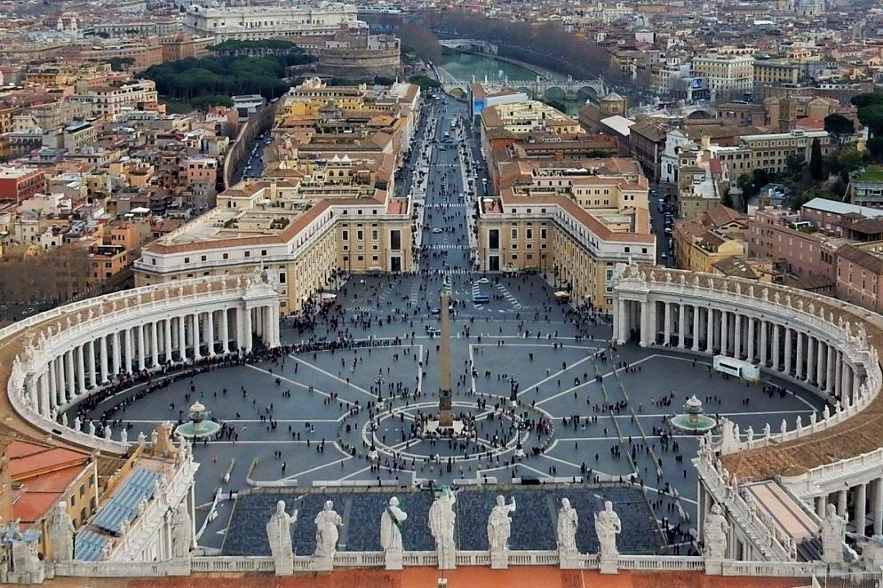
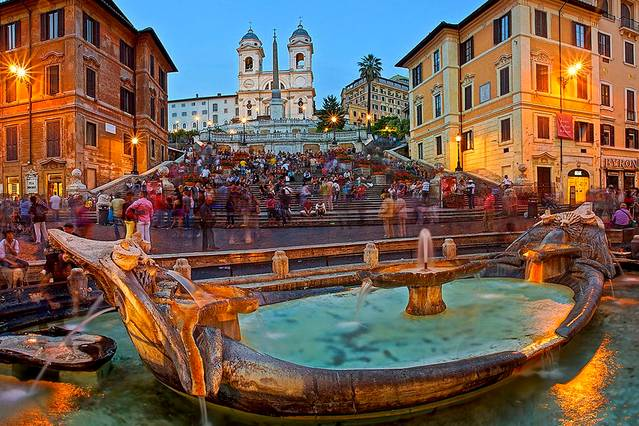

Tarih: 2022 Yazı
Lokasyon: Paris, Fransa
Paris'te Eyfel Kulesi'ni ziyaret ettim, Louvre Müzesi'ni gezdim ve Seine Nehri'nde tekne turu yaptım.
  Tarih: 2021 Kışı
Lokasyon: İstanbul, Türkiye
İstanbul'da Ayasofya ve Topkapı Sarayı'nı ziyaret ettim, Boğaz Turu yaptım ve Kapalı Çarşı'da alışveriş yaptım.
  Tarih: 2019 Sonbahar
Lokasyon: Roma, İtalya
Roma'da Kolezyum'u gezdim, Vatikan'ı ziyaret ettim ve İspanyol Merdivenleri'nde fotoğraf çektim.
  